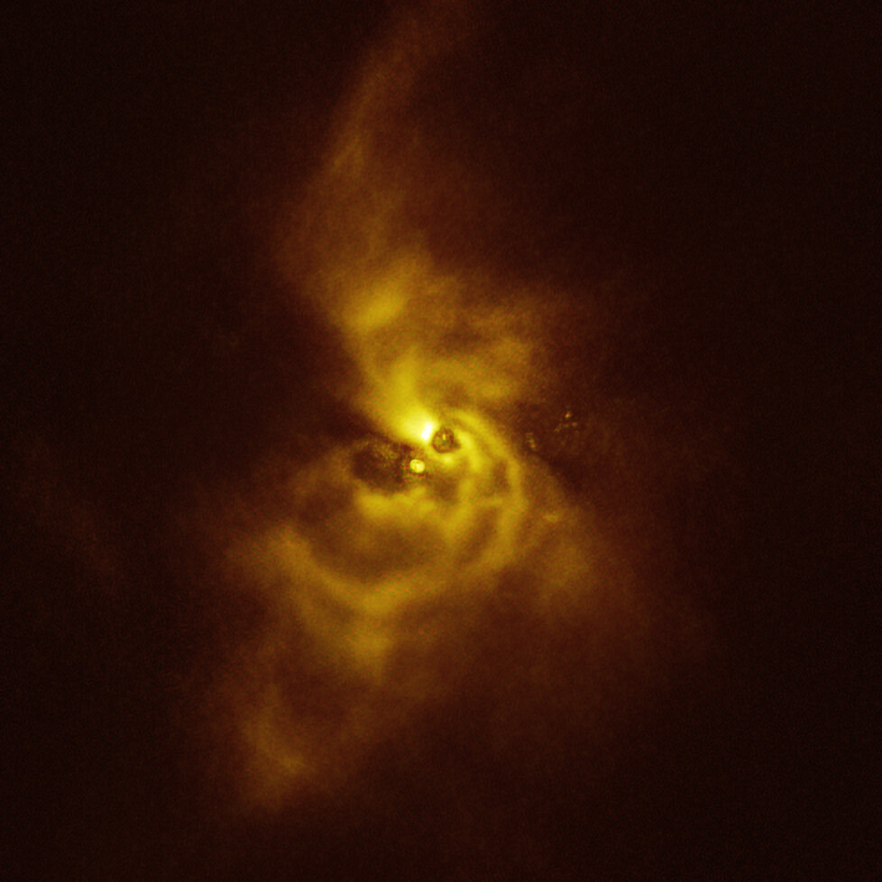
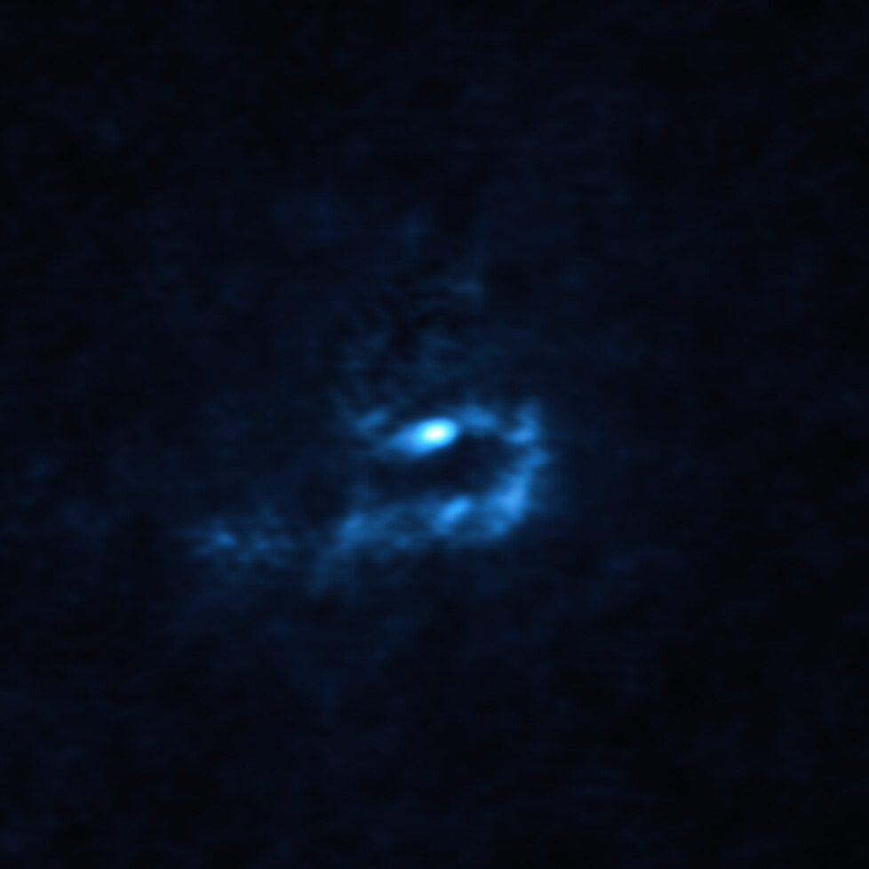

A spectacular new image published today by the European Southern Observatory gives us clues about how planets as massive as Jupiter might form. Using ESO's Very Large Telescope (VLT) and the Atacama Large Millimeter/submillimeter Array (ALMA), researchers have detected large dust clumps near a young star that could collapse to create giant planets.
Combined SPHERE and ALMA image of the material orbiting V960 Mon. Credit: ESO/ALMA (ESO/NAOJ/NRAO)/Weber et al.
"This discovery is truly captivating, as it marks the first detection, around a young star, of clumps with the potential to give rise to giant planets," says Alice Zurlo, researcher at Universidad Diego Portales, Chile, who participated in the observations.


Astronomers believe giant planets form either through core accretion, when dust grains stick together, or through gravitational instability, when large fragments of the material around a star contract and collapse. While researchers had previously found evidence for the first scenario, evidence supporting the second has been scarce.
"Until now, no one had seen an actual observation of gravitational instability at planetary scale," says Philipp Weber, researcher at the Universidad de Santiago de Chile, who led the study published today in The Astrophysical Journal Letters.
"Our group has been searching for more than ten years for clues about how planets form, and we couldn't be more excited by this incredible discovery," says Sebastián Pérez, team member at the Universidad de Santiago de Chile.
ESO's instruments will help astronomers reveal more details of this captivating planetary system in formation, and ESO's Extremely Large Telescope (ELT) will play a key role. Currently under construction in the Atacama desert in Chile, the ELT will observe the system with greater detail than ever, gathering crucial information about it. "The ELT will allow us to explore the chemical complexity around these clumps, helping us discover more about the composition of the material from which potential planets are forming," concludes Weber.
Additional information
Open Access paper: Weber et al. (2023), Spirals and Clumps in V960 Mon: Signs of Planet Formation via Gravitational Instability around an FU Ori Star?
The team behind this work consists of young researchers from various Chilean universities and institutes, within the research centre Millennium Nucleus on Young Exoplanets and their Moons (YEMS), funded by the National Research and Development Agency of Chile (ANID) and its Millennium Science Initiative Programme. The two facilities used, ALMA and VLT, are located in the Atacama desert in Chile.